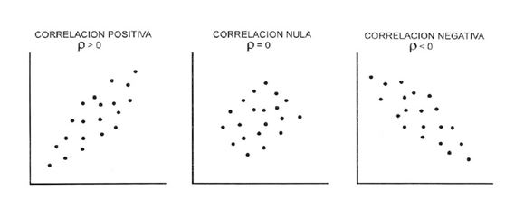

Probabilidad y Estadistica
Link de curso dataquest
Temario
Tema1=Estadística descriptiva.
1.1 Conceptos básicos de estadística
- Definición: La estadística es una ciencia que recolecta, organiza, analiza e interpreta datos con el propósito de obtener información útil que nos permite describir, comprender y hacer conclusiones sobre fenómenos y eventos.
- Teoría de decisión: La teoría de decisión es un campo de la estadística que se enfoca en tomar buenas decisiones bajo incertidumbre, las cuales proporcionan un marco para analizar y evaluar diferentes opciones y tomar la mejor solución de los objetivos, la información disponible y las consecuencias potenciales.
- Población: En estadística, una población se refiere al conjunto completo de personas, objetos o eventos, etc. que se desea estudiar. La población puede ser finita o infinita cuando es imposible contar todos los elementos.
- Muestra aleatoria: Una muestra aleatoria es un subconjunto de elementos seleccionados al azar de una población.
- Parámetros aleatorios: Los parámetros aleatorios son características o medidas de la media, la varianza, la proporción, etc, que describen una población o distribución de probabilidad.
1.2 Descripción de datos
- Datos no agrupados: Son los datos individuales sin ninguna organización previa.
- Datos agrupados: Son los datos que se han organizado en clases, lo que permite resumir y analizar la información de manera más eficiente.
- Frecuencia de clase: La frecuencia de clase es el número de elementos o datos que existen dentro de cada intervalo o clase en un conjunto de datos agrupados.
- Frecuencia relativa: La frecuencia relativa es el porcentaje de elementos que se encuentran en cada clase o intervalo con respecto al total de datos. Se calcula dividiendo la frecuencia de cada clase por el número total de datos.
- Punto medio: El punto medio de una clase es el valor que se encuentra en el centro del intervalo. Se calcula como la media aritmética entre el límite inferior y el límite superior de la clase.
- Límites:
- Límite inferior: Es el valor más bajo del intervalo de clase.
- Límite superior: Es el valor más alto del intervalo de clase.
1.3 Medidas de tendencia central
- Media aritmética: Es el promedio de un conjunto de datos obtenidos, sumando todos los valores y dividiendo entre el número total de datos.
- Media geométrica: Es una media que se calcula multiplicando todos los valores y extraer la raíz del número total de datos. Es útil para datos con proporciones o porcentajes.
- Media ponderada: Es una media que tiene en cuenta la importancia relativa de cada valor a través de pesos o factores de ponderación.
- Mediana: Es el valor central de un conjunto de datos ordenados de menor a mayor. Divide al conjunto en dos partes iguales.
- Moda: Es el valor que aparece con mayor frecuencia en un conjunto de datos.
- Medidas de Dispersión
- Varianza: Es una medida que indica cuánto se alejan en promedio los valores de la media. Se calcula como el promedio de los cuadrados de las desviaciones de cada valor respecto a la media.
- Desviación estándar: Es la raíz cuadrada de la varianza que indica cuánto se desvían en promedio los valores respecto a la media.
- Desviación media: Es el promedio de las diferencias absolutas entre cada valor y la media.
- Desviación mediana: Es el promedio de las diferencias absolutas entre cada valor y la mediana.
- Rango: Es la diferencia entre el valor más alto y el más bajo de un conjunto de datos.
1.4 Parámetros para datos agrupados.
- Los parámetros nos permiten describir y resumir la información contenida en un conjunto de datos agrupados en intervalos o clases. Estos son fundamentales para realizar un análisis estadístico y visualizaciones gráficas, como histogramas y diagramas de caja.
1.5 Distribución de frecuencias.
- La distribución de frecuencia es una forma de organizar y presentar un conjunto de datos, agrupándolos en intervalos o clases y mostrando la frecuencia o el número de elementos que existen en cada uno de esos intervalos.
1.6 Técnicas de agrupación de datos.
- Las técnicas de agrupación de datos, también conocidas como técnicas de clustering, son métodos utilizados para organizar y clasificar un conjunto de datos en grupos.
- Clustering jerárquico: Es un método que construye una jerarquía de clusters, en la que los elementos se van agrupando de manera sucesiva.
- Clustering basado en densidad: Identifica clusters en función de la densidad de los datos, agrupando aquellos elementos que se encuentran en regiones de alta densidad y separándolos de aquellos que se encuentran en regiones de baja densidad.
- Clustering de partición: Divide el conjunto de datos en un número predefinido de clusters, de tal manera que cada elemento pertenece a un único cluster.
- Clustering basado en modelos: Asume que los datos provienen de una mezcla de distribuciones de probabilidad y utiliza métodos de estimación de máxima verosimilitud para identificar los parámetros de dichas distribuciones.
1.7 Técnicas de muestreo.
- Las técnicas de muestreo son métodos utilizados para seleccionar una parte representativa de una población, con el objetivo de estudiar y obtener conclusiones sobre dicha población a partir de la información recolectada en la muestra.
- Muestreo aleatorio simple: Cada elemento de la población tiene la misma probabilidad de ser seleccionado para la muestra. Se realiza de manera totalmente aleatoria, sin seguir ningún patrón.
- Muestreo aleatorio estratificado: La población se divide en subgrupos (estratos) homogéneos, y luego se selecciona una muestra aleatoria de cada estrato, de manera proporcional o desproporcional.
- Muestreo sistemático: Se selecciona un elemento de la población al azar y luego se eligen los siguientes elementos a intervalos regulares.
- Muestreo por cuotas: Se establecen cuotas o proporciones de determinadas características en la muestra, que deben reflejar las mismas proporciones existentes en la población.
1.8 Histogramas
- Un histograma es una representación gráfica que muestra la distribución de frecuencia de una variable numérica. Consiste en un conjunto de barras rectangulares donde: El eje horizontal representa los rangos o intervalos de valores de la variable. El eje vertical representa la frecuencia o cantidad de datos que caen en cada rango. La altura de cada barra indica cuántos datos hay en ese intervalo.
El siguiente repositorio es una representacion de lo que se puede realizar en el tema 1
HTML
Tema2 = Fundamentos de la Teoría de Probabilidad.
2.1 Técnicas de Conteo
- Las técnicas de conteo son un conjunto de métodos matemáticos utilizados para calcular el número de formas en que se puede realizar una determinada selección de elementos dentro de un conjunto. Estas técnicas se utilizan comúnmente en problemas de probabilidad y combinatoria.

2.1.1 Principio aditivo.
- El Principio Aditivo, también conocido como Regla de la Suma o Principio de la Adición, es uno de los principios fundamentales en las técnicas de conteo, el principio Aditivo establece que si tenemos dos o más eventos mutuamente excluyentes (es decir, que no pueden ocurrir al mismo tiempo), entonces el número total de formas en que puede ocurrir alguno de esos eventos es la suma de los números de formas en que puede ocurrir cada evento por separado.
2.1.2 Principio multiplicativo.
- El Principio Multiplicativo, también conocido como Regla del Producto o Principio Fundamental del Conteo, es otro de los principios fundamentales en las técnicas de conteo.
El Principio Multiplicativo establece que si una tarea se puede realizar de n maneras diferentes y luego otra tarea se puede realizar de m maneras diferentes, independientemente de la primera tarea, entonces la secuencia completa de ambas tareas se puede realizar de n × m maneras diferentes.
2.1.3 Notación Factorial.
- la notación factorial es una forma concisa y poderosa de representar y trabajar con productos de números naturales consecutivos, siendo una herramienta fundamental en el campo de la combinatoria y la probabilidad.
2.1.4 Permutaciones.
- Las permutaciones se refieren a la forma de ordenar o arreglar un conjunto de elementos. En otras palabras, las permutaciones representan el número de formas en que se pueden organizar o disponer los elementos de un conjunto.
2.1.5 Combinaciones.
- Las combinaciones se refieren a la forma de seleccionar un subconjunto de elementos de un conjunto, sin tener en cuenta el orden en que se seleccionan los elementos.
2.1.6 Diagrama de Árbol.
Un diagrama de árbol es una herramienta gráfica utilizada para representar visualmente las posibles secuencias de eventos o resultados en un problema de probabilidad o conteo.
Estructura de un diagrama de árbol
- Nodos: Representan los eventos o resultados posibles.
- Ramas: Representan las transiciones entre los eventos o resultados.
Características principales
- Ramificación: Cada nodo puede tener una o más ramas que representan los posibles resultados.
- Jerarquía: Los nodos se organizan de arriba hacia abajo, mostrando la secuencia de eventos.
- Probabilidades: Cada rama puede llevar asociada una probabilidad de ocurrencia.
2.1.7 Teorema del Binomio.
- El Teorema del Binomio es un importante resultado matemático que permite calcular de manera sencilla el desarrollo de una expresión binomial elevada a una potencia.
2.2 Teoría elemental de probabilidad.
- La Teoría Elemental de la Probabilidad es la rama de las matemáticas que estudia los fundamentos y conceptos básicos del cálculo de probabilidades
2.3 Probabilidad de Eventos.
- Definición de espacio muestral = El espacio muestral es un concepto fundamental en la Teoría Elemental de la Probabilidad, ya que define el marco en el cual se realizan los cálculos de probabilidad para los diferentes eventos que pueden ocurrir en un experimento aleatorio.
- Definición de evento = Los eventos son la base para calcular las probabilidades en un experimento aleatorio. Mediante la definición y manipulación de eventos, se pueden realizar los cálculos probabilísticos necesarios para resolver problemas y aplicaciones en diversas áreas.
- Simbología = La simbología permite una representación concisa y eficiente de los conceptos y operaciones de la Teoría Elemental de la Probabilidad, facilitando su aplicación y manipulación en la resolución de problemas.
- Unión = La unión de eventos es una de las operaciones fundamentales en la Teoría Elemental de la Probabilidad, y se utiliza para calcular probabilidades cuando se requiere que ocurra al menos uno de los eventos.
- Intersección = La intersección de eventos es una operación fundamental en la Teoría Elemental de la Probabilidad, y se utiliza para calcular probabilidades cuando se requiere que ocurran simultáneamente dos eventos.
- Diagramas de Venn = Los diagramas de Venn son una representación gráfica muy útil para visualizar y comprender las operaciones y relaciones entre conjuntos, particularmente en el contexto de la Teoría Elemental de la Probabilidad.
2.4 Probabilidad con Técnicas de Conteo.
- Axiomas = Los axiomas de la teoría de la probabilidad son los principios fundamentales que rigen el cálculo y la interpretación de las probabilidades. Estos axiomas fueron establecidos por el matemático ruso Andréi Kolmogórov en 1933.
- Teoremas = Los teoremas son un conjunto con los axiomas y las técnicas de conteo, constituyen las herramientas fundamentales para el análisis y cálculo de probabilidades en diversos problemas y aplicaciones.
2.5 Probabilidad condicional.
- La probabilidad condicional es una herramienta fundamental para modelar y cuantificar la dependencia entre eventos en la teoría de la probabilidad.
- Dependiente = En probabilidad, cuando dos eventos A y B son dependientes, significa que el resultado de uno de ellos afecta la probabilidad del otro. En otras palabras, el conocimiento de que uno de los eventos ha ocurrido modifica la probabilidad del otro evento.
La dependencia entre eventos se expresa a través de la probabilidad condicional. Si los eventos A y B son dependientes, entonces la probabilidad de A dado B (P(A|B)) es diferente a la probabilidad de A sin tener en cuenta B (P(A)).
- Independiente = Cuando dos eventos A y B son independientes, significa que el resultado de uno de ellos no afecta la probabilidad del otro. En otras palabras, el conocimiento de que uno de los eventos ha ocurrido no modifica la probabilidad del otro evento.
2.6 Ley multiplicativa.
- La ley multiplicativa en probabilidad es una regla que relaciona la probabilidad conjunta de dos eventos con sus respectivas probabilidades individuales y la probabilidad condicional.
La ley multiplicativa es muy útil para calcular probabilidades conjuntas a partir de probabilidades individuales y condicionales. Además, se utiliza como base para el Teorema de Bayes, que permite actualizar probabilidades a partir de nueva información.
2.7 Eventos independientes.
- Regla de Bayes = La Regla de Bayes es un teorema fundamental en probabilidad y estadística que permite actualizar la probabilidad de una hipótesis o evento A, a la luz de nueva evidencia o información B.

En este html se realizan ejercicios para la comprencion del tema 2
HTML
Tema3=Variables Aleatorias
3.1 Variables aleatorias discretas:
- Las variables aleatorias discretas son aquellas que pueden tomar únicamente valores separados o puntuales dentro de un conjunto finito o numerable.
%209.15.56.png)
Este es un video que explica el subtema de variables discretas
Miralo aqui
3.1.1 Distribución de probabilidad en forma general.
- la distribución de probabilidad es una función matemática que describe la probabilidad de que una variable aleatoria tome determinados valores o se encuentre en ciertos intervalos
%209.18.24.png)
3.1.2 Valor esperado
- El valor esperado, también conocido como esperanza matemática o media, es un concepto fundamental en la teoría de probabilidad y estadística. Representa el valor promedio que se espera obtener al observar muchas realizaciones de una variable aleatoria.
%209.29.22.png)
3.1.3 Variancia, desviación estándar.
- La varianza es una medida de dispersión de una variable aleatoria X. Específicamente, la varianza mide cuánto se dispersan o se alejan los valores de X de su valor esperado o media (μ).
- La desviación estándar es una medida de dispersión que está íntimamente relacionada con la varianza. Específicamente, la desviación estándar se define como la raíz cuadrada positiva de la varianza.
%209.22.18.png)
3.1.4 Función acumulada.
- La función de distribución acumulada, denotada como F(x), es una función fundamental en la teoría de probabilidad y estadística.
La función de distribución acumulada de una variable aleatoria X se define como la probabilidad de que la variable X tome un valor menor o igual a x:
La función de distribución acumulada proporciona información valiosa sobre el comportamiento de la variable aleatoria X. Permite calcular probabilidades, construir intervalos de confianza, realizar pruebas de hipótesis, entre otras aplicaciones importantes
%209.25.19.png)
3.2 Variables aleatorias Continuas:
- Las variables aleatorias continuas son aquellas que pueden tomar cualquier valor dentro de un intervalo. A diferencia de las variables aleatorias discretas, que toman valores separados, las variables continuas pueden asumir una infinidad de valores.
las variables aleatorias continuas se caracterizan por tener una función de densidad de probabilidad que describe su comportamiento, y una función de distribución acumulada que permite calcular probabilidades.
Este es un video que explica el subtema de variables continuas
Miralo aqui
3.2.1 Distribución de probabilidad en forma general.
- Una distribución de probabilidad es aquella que permite establecer toda la gama de resultados probables de ocurrir en un experimento determinado. Es decir, describe la probabilidad de que un evento se realice en el futuro.
%209.27.50.png)
3.2.2 Valor esperado
-
El valor esperado suele denominarse media o promedio "a largo plazo". Esto significa que a largo plazo de hacer un experimento una y otra vez, se esperaría este promedio
3.2.3 Variancia, desviación estándar.
- La varianza y la desviación estándar indican si los valores se encuentran más o menos próximos a las medidas de posición. La desviación estándar es simplemente la raíz cuadrada positiva de la varianza.
3.2.4 Función acumulada.
- La función de distribución acumulada (CDF) calcula la probabilidad acumulada de un valor dado de x. Utilice la CDF para determinar la probabilidad de que una observación aleatoria que se toma de la población sea menor que o igual a cierto valor.
%209.31.18.png)
3.2.5 Cálculos de probabilidad.
- el cálculo de probabilidades es fundamental en el análisis estadístico y la toma de decisiones basada en datos. Las distribuciones de probabilidad proporcionan las herramientas necesarias para realizar estos cálculos de manera sistemática y rigurosa.
Tema 4= Distribuciones de Probabilidad.
4.1 Función de probabilidad
- La función de probabilidad describe la probabilidad relativa de que una variable aleatoria continua X tome un determinado valor x. Se representa mediante la función de densidad de probabilidad f(x), la cual cumple ciertas propiedades como ser no negativa y tener un área total bajo la curva igual a 1.
4.2 Distribución binomial
En este video puedes ver un ejemplo de como resolverlo
Miralo aqui
4.3 Distribución la hipergeométrica
4.4 Distribución de Poisson
4.5 Distribución normal
4.6 Distribución T-student
- La distribución T-student es una familia de distribuciones de probabilidad que se utiliza cuando se trabaja con muestras pequeñas y la varianza poblacional es desconocida.
- Está parametrizada por un único parámetro, que es el número de grados de libertad, y se aproxima a la distribución normal a medida que los grados de libertad aumentan.
4.7 Distribución Chi cuadrada
- La distribución Chi cuadrada se utiliza para modelar la suma de los cuadrados de variables aleatorias normales independientes estandarizadas.
- Está parametrizada por un único parámetro, que es el número de grados de libertad, y tiene diversas aplicaciones en estadística, como en pruebas de hipótesis y cálculo de intervalos de confianza.
4.8 Distribución F
- La distribución F, también conocida como distribución de Snedecor-Fisher, es una distribución de probabilidad continua que surge al considerar el cociente de dos variables aleatorias independientes que siguen una distribución Chi cuadrada.
- Está parametrizada por dos números de grados de libertad, y tiene aplicaciones en el análisis de varianza (ANOVA) y otros procedimientos estadísticos.
Tema5 = Regresión lineal
5.1 Regresión y correlación
-
Regresión:
La regresión es una técnica estadística que se utiliza para modelar y analizar la relación entre una variable dependiente (o de respuesta) y una o más variables independientes (o predictoras). El objetivo de la regresión es encontrar la ecuación matemática que mejor describe la relación entre las variables. Los tipos más comunes de regresión son:
Regresión lineal: Busca una relación lineal entre las variables.
Regresión logística: Utilizada cuando la variable dependiente es categórica.
Regresión múltiple: Usa múltiples variables independientes para predecir una variable dependiente.
Correlación:
La correlación mide la fuerza y la dirección de la relación lineal entre dos variables. El coeficiente de correlación, denotado por "r", varía entre -1 y 1:
r = 1 indica una correlación positiva perfecta
r = -1 indica una correlación negativa perfecta
r = 0 indica que no hay relación lineal entre las variables

5.1.1 Diagrama de dispersión
Un diagrama de dispersión es una representación gráfica que muestra la relación entre dos variables. Cada punto en el gráfico representa un par de valores de las variables, lo que permite visualizar la posible asociación entre ellas.
5.1.2 Regresión lineal simple
La regresión lineal simple es una técnica estadística que permite establecer una relación lineal entre una variable dependiente y una variable independiente. El objetivo es encontrar la ecuación de la recta que mejor se ajuste a los datos.
5.1.3 Correlación
La correlación es una medida estadística que indica la fuerza y la dirección de la relación lineal entre dos variables. El coeficiente de correlación, que varía entre -1 y 1, permite cuantificar el grado de asociación entre las variables.
5.1.4 Determinación y análisis de los coeficientes de correlación y de determinación
El coeficiente de determinación (R^2) es una medida que indica la proporción de la variabilidad de la variable dependiente que es explicada por la variable independiente en un modelo de regresión lineal. El análisis de estos coeficientes permite evaluar la calidad del ajuste y la significancia de la relación.
5.1.5 Distribución normal bidimensional
La distribución normal bidimensional es una extensión de la distribución normal univariante a dos variables aleatorias. Permite modelar la relación entre dos variables cuantitativas y es la base teórica de la regresión y correlación lineal.